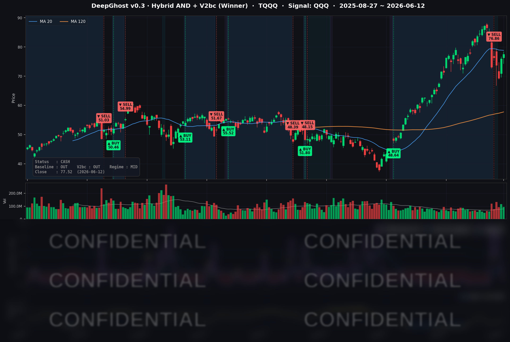

인텔發 반도체 랠리와 종전 합의 기대로 인한 유가 급락으로 전 지수가 또 한 번 반등했습니다. 주말에 종전 MOU 체결이 핵심입니다. 만약 또 불발되고 유가가 급등한다면 다시 한번 시장에 큰 충격이 올수 있고 트럼트의 TACO가 더 이상 시장에서 통하지 않게 될 것 입니다. 불확실성이 크니 관망하는게 맞겠습니다. 단기 급등락에 흔들리지 마시고 숲을 보시기 바랍니다.
📊 오늘의 매매 신호
| 항목 | 내용 |
|---|---|
| 오늘 할 일 | ✅ 아무것도 안 해도 됩니다 |
| 포지션 상태 | 💵 현금 보유 중 (OUT OF POSITION) |
| 현금 보유 기간 | 2026-06-08 ~ 2026-06-12 (청산 4일째) |
| TQQQ 종가 | $77.52 (+1.99%) |
지난 6월 8일 직전 포지션을 청산한 뒤로 모델은 계속 현금을 유지하고 있습니다. 오늘까지 4거래일째 재진입 신호 없이 대기 중인 상태입니다. 오늘도 따로 하실 일은 없습니다.
TQQQ 시그널 — OUT OF POSITION
현재 상태: 현금 보유 중 | 직전 매매(5/6 매수 → 6/8 청산)는 Baseline 기준 약 +70% 수익으로 마무리

오늘 TQQQ는 +1.99% 올라 $77.52로 마감했습니다. 시장은 이틀 연속 반등했고, 모델이 측정하는 추세 신호도 어제에 이어 오늘 더 반등 시그널에 가까움을 보여줬습니다. 하지만 아직 매수를 하라는 건 아닙니다. AI 모델 내부 동작은 해석이 불가능합니다. 다만, 예측할 수 있는 것은 "과거에 이러한 경우에 현금을 들고 있는게 더 유리했다" 입니다.
모델은 단발 반등에 흔들리지 않고, 추세 바닥이 명확히 확인되는 순간을 기다립니다. 다만 추세 신호가 깊은 저점 구간에 이틀째 머무르고 있다는 점은, 앞으로 며칠간 흐름에 따라 저점 매수(재진입)로 발전할 수 있습니다. 하지만 단발 반등을 따라 신호가 다시 위로 튀면 이번 흐름은 다시 소멸할 수도 있습니다. 시장을 예측하지 마시고 대응하시기 바랍니다.
오늘 미국 시장 — 시황 요약
주중 5월 CPI(소비자물가) 충격으로 한 차례 출렁였던 시장이, 6월 12일에는 종전 분위기로 반등했습니다. 인텔 실적이 촉발한 반도체 랠리와 미·이란 긴장 완화에 따른 유가 급락이 양대 동력이었습니다.
지수 마감
| 지수 | 종가 | 등락률 |
|---|---|---|
| S&P 500 | 7,431.46 | +0.50% |
| 나스닥 종합 | 25,888.84 | +0.31% |
| 다우 존스 | 51,202.26 | +0.70% |
| 러셀 2000 | 2,943.99 | +0.79% |
전 지수가 올랐고, 특히 소형주(러셀 2000)와 다우가 나스닥을 앞섰습니다. 애플·아마존 등 일부 대형 기술주가 부진하면서 나스닥 상승폭을 눌렀고, 반대로 경기민감주·소형주로 온기가 번지는 전형적인 위험선호 장세였습니다.
국채 금리 동향
| 만기 | 수익률 | 전일 대비 |
|---|---|---|
| 3개월 | 3.618% | -0.5bp |
| 5년 | 4.213% | +2.3bp |
| 10년 | 4.487% | +2.4bp |
| 30년 | 4.975% | +2.4bp |
장기물(5년~30년)이 +2bp 안팎으로 나란히 소폭 올랐고, 단기물(3개월)은 거의 제자리였습니다. 장단기 금리차(10년-3개월)는 +86.9bp로 정상적인 우상향 곡선을 유지해 경기 침체 신호와는 거리가 있습니다. 장기 금리 상승폭이 크지 않아 주식 반등을 방해하지 않았고, 단기 금리가 안정적이라는 점은 "추가 금리 인하를 서두르지 않는다"는 시장 인식을 반영합니다. 다만 30년물이 4.975%로 5% 선에 바짝 붙어 있어 장기 인플레이션·재정 부담에 대한 경계는 남아 있습니다.
연준 발언 & 금리 패스
이날 시장을 움직인 특정 연준 위원의 발언은 없었습니다. 다만 정책 배경을 보면, 주중 발표된 5월 CPI가 전년 대비 상승률이 다소 높게 나오며 금리 인하 기대가 한 차례 후퇴했고, 이것이 주중 변동성의 배경이 되었습니다. 단기 금리 흐름은 "공격적인 인하 베팅이 없다"는 중립~매파 색채를 유지하고 있으며, 향후 인하 경로는 다음 물가 지표와 유가 하락이 실제 물가 둔화로 이어지는지에 달려 있습니다.
오늘의 핵심 이슈
- 반도체 랠리 — 인텔이 점화. 인텔이 호실적과 함께 BofA의 투자의견 상향(목표가 상향)을 받으며 반도체 업종 전반을 끌어올렸습니다. 인텔이 +6.51%, 퀄컴이 +4.32% 급등했습니다.
- 유가 급락 — 미·이란 긴장 완화. 이란 협상 진전 기대가 지정학 리스크를 빠르게 덜어내며 WTI 유가가 -3.90%($84.29), 브렌트유가 -4.06%($86.71) 하락했습니다. 유가 하락은 물가 둔화 기대를 통해 위험선호를 뒷받침했습니다.
- 변동성 급락 — 위험선호 복귀. VIX가 -9.05% 내린 17.68로, 주중 22선까지 튀었던 공포가 18 아래로 빠르게 진정됐습니다.
변동성 & 투자심리
VIX(공포지수)는 17.68로 9% 넘게 급락하며 18 아래의 안도 국면으로 돌아왔습니다. 주중 흐름은 18.92 → 19.87 → 22.22 → 19.44 → 17.68로, CPI 공포가 빠르게 정상화된 모습입니다. 한편 CNN 공포·탐욕 지수(Fear & Greed)는 직전 기준 약 27~37의 '공포(Fear)' 구간으로 보고됐습니다. 오늘의 안도 랠리를 감안하면 소폭 개선됐을 가능성이 있으나, 여전히 공포 구간에서 막 벗어나는 초기 단계로 과열과는 거리가 있습니다.
매크로 & 원자재
미·이란 긴장 완화로 WTI는 $84.29(-3.90%), 브렌트유는 $86.71(-4.06%)로 급락했습니다. 반면 금(선물)은 $4,239.90로 +3.66% 강세를 보였습니다. 위험선호 장세인데도 금이 오른 것은, 유가 하락에 따른 실질금리 하락 기대와 안전자산 수요가 함께 작동한 결과로 풀이됩니다.
주요 종목 동향
| 종목 | 전일 종가 | 당일 종가 | 등락률 | 비고 |
|---|---|---|---|---|
| INTC | 116.96 | 124.57 | +6.51% | 호실적 + BofA 투자의견 상향, 칩 랠리 진앙 |
| QCOM | 202.96 | 211.72 | +4.32% | 인텔發 반도체 랠리 동참 |
| TSLA | 399.15 | 406.43 | +1.82% | 위험선호 반등 |
| GOOGL | 357.77 | 359.68 | +0.53% | 메가캡 중 상대적 견조 |
| NVDA | 204.87 | 205.19 | +0.16% | 섹터 랠리 대비 소폭 — 칩 내 자금 회전 |
| MSFT | 390.34 | 390.74 | +0.10% | 보합 |
| META | 568.43 | 566.98 | -0.26% | 소폭 차익실현 |
| AVGO | 385.57 | 382.07 | -0.91% | 섹터 랠리 미동참 |
| NFLX | 81.27 | 80.34 | -1.14% | 메가캡 약세 |
| AMZN | 241.51 | 238.55 | -1.23% | 차익실현·자금 회전 |
| MU | 995.87 | 981.61 | -1.43% | 메모리 — 섹터 랠리에서 소외 |
| AAPL | 295.63 | 291.13 | -1.52% | 메가캡 자금 이탈, 커버리지 내 최약 |
오늘의 반등은 토대가 다소 좁았습니다. 칩 랠리가 인텔·퀄컴 두 종목에 집중됐고 엔비디아·브로드컴·마이크론은 동참하지 못했으며, 애플·아마존 등 대형 기술주는 오히려 빠졌습니다. 자금이 일부 대형주에서 반도체·소형주·경기민감주로 회전한 하루였습니다.
Ghost.AI — Quantitative AI Investment
Model: DeepGhost v0.3 | Transformer-Based Deep Learning
Coverage: 13 tickers | Updated every trading day after US market close
⚠️ 본 자료는 정보 제공 목적으로만 작성되었으며 투자 권유가 아닙니다. 모든 투자의 책임은 투자자 본인에게 있습니다. 과거 성과가 미래 수익을 보장하지 않습니다.
[유의사항]
고스트에이아이 주식회사는 「자본시장과 금융투자업에 관한 법률」 제101조에 따른 유사투자자문업자로 등록된 사업자입니다.
- 본 서비스는 불특정 다수를 대상으로 발행되는 단방향 정보 제공 서비스이며, 투자자 개인의 재산 상황·투자 목적·위험 선호도를 반영한 개별 투자 조언이 아닙니다.
- 고스트에이아이 주식회사는 고객과 쌍방향 의사소통(개별 상담, 맞춤형 자문 등)을 제공하지 않습니다.
- 본 콘텐츠는 투자 권유 또는 매매 주문의 청약·청약의 권유에 해당하지 않으며, 최종 투자 판단 및 그에 따른 손익의 책임은 전적으로 투자자 본인에게 있습니다.
고스트에이아이 주식회사 | 유사투자자문업 등록번호: 제2025-000호